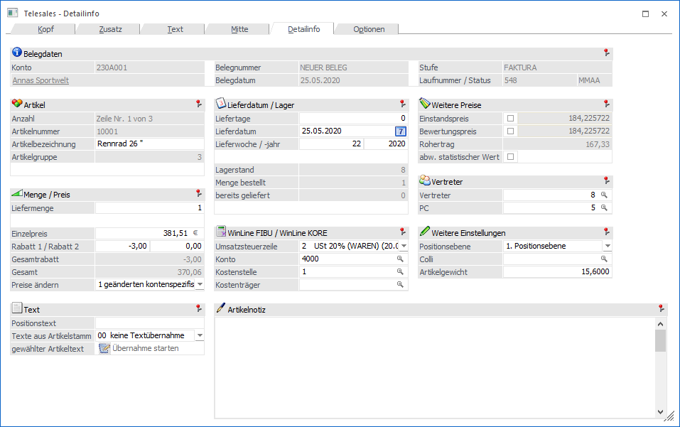

Mit Anwahl von Detail-Info schalten Sie in die Detailansicht der Belegzeile (nur bei Artikel und Textzeilen).

Folgende Datenfelder werden sichtbar (und editierbar):
ü Artikelbezeichnung
ü Menge
ü Einzelpreis
ü abw. stat. Wert
Bei Aktivierung
der Checkbox, kann für die Intrastat ein abweichender statistischer Wert
eingetragen werden. Dieser wird mit dem Gesamtbetrag der Zeile, umgerechnet in
Netto und Euro, vorbelegt. Wenn ein abweichender statistischer Wert im Beleg
vorhanden ist, wird dieser in der Intrastat anstelle des Rechnungsbetrages
verwendet.
ü Rabatt1
ü Rabatt2
ü Konto
ü Kore-Information (Kostenstelle und Kostenträger)
ü USt-Zeile
ü Vertreter
ü Provisionscode
ü Liefertage
ü Lieferdatum
ü Lieferwoche/Jahr
ü Colli
ü Positionsnummer
ü Positionstext
ü Menge bestellt
ü Einstandspreis (Durch Aktivieren der Checkbox kann der Einstandspreis für diesen gerade in Bearbeitung stehenden Artikel manuell editiert werden).
ü Bewertungspreis (Einstellung lt. Artikelstamm - Durch Aktivieren der Checkbox kann der Einstandspreis für diesen gerade in Bearbeitung stehenden Artikel manuell editiert werden.)
ü Rohertrag (VK-Preis - Bewertungspreis)
ü Texte aus Artikelstamm übernehmen (Aus der Auswahllistbox kann ein Textfeld bestimmt werden, dessen Inhalt in das Notizfeld eingefügt wird. Zur Auswahl aus der Listbox stehen die Notizfelder 1 - 10 sowie die Felder Langtext 1 und Langtext 2. Nach Bestätigung des Feldes ist es möglich den Übernehmen-Button anzuwählen, und somit die Übernahme durchzuführen. Es können beliebig viele Texte in das Notizfeld übernommen werden; eingefügt wird immer an markierter Stelle im Notizfeld.)
ü Zusätzlicher Text
Durch die VCR-Buttons kann zwischen den einzelnen Erfassungszeilen gewechselt werden, ohne in das Fenster "Mitte" wechseln zu müssen.
Wechseln zum ersten Datensatz in der Erfassungsmaske
 Wechseln zum
vorherigen Datensatz in der Erfassungsmaske
Wechseln zum
vorherigen Datensatz in der Erfassungsmaske
 Wechseln zum
nächsten Datensatz in der Erfassungsmaske
Wechseln zum
nächsten Datensatz in der Erfassungsmaske
Wechseln zum letzten Datensatz in der Erfassungsmaske.
 Ruft die
Funktion "Gehe Zu" auf.
Ruft die
Funktion "Gehe Zu" auf.
Dieselben Felder (ausgenommen den Notizfeldern) sind auch ohne Detailinfo verfügbar, wenn Sie in der normalen Ansicht der Erfassungsmaske einfach mit dem Cursor nach rechts scrollen (bzw. mit der Maus).